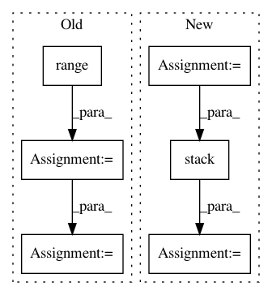

6b48055fdfe3c628833ed26ca394ef2fb1d97f82,niftynet/layer/resampler.py,ResamplerLayer,_resample_nearest,#ResamplerLayer#Any#Any#,58
Before Change
spatial_coords = self.boundary_func(
tf.round(sample_coords), in_spatial_size)
batch_ids = tf.reshape(
tf.range(batch_size), [batch_size] + [1] * (out_spatial_rank + 1))
batch_ids = tf.tile(batch_ids, [1] + out_spatial_size + [1])
output = tf.gather_nd(
inputs, tf.concat([batch_ids, spatial_coords], -1))
if self.boundary == "ZERO":
After Change
spatial_coords = self.boundary_func(
tf.round(sample_coords), in_spatial_size)
output = tf.stack([
tf.gather_nd(img, coords) for (img, coords) in
zip(tf.unstack(inputs), tf.unstack(spatial_coords))])
if self.boundary == "ZERO":
scale = 1. / (tf.constant(in_spatial_size, dtype=tf.float32) - 1)
mask = tf.logical_and(
In pattern: SUPERPATTERN
Frequency: 3
Non-data size: 6
Instances
Project Name: NifTK/NiftyNet
Commit Name: 6b48055fdfe3c628833ed26ca394ef2fb1d97f82
Time: 2017-10-26
Author: wenqi.li@ucl.ac.uk
File Name: niftynet/layer/resampler.py
Class Name: ResamplerLayer
Method Name: _resample_nearest
Project Name: fgnt/pb_bss
Commit Name: 2cfa9aa576ae7544f76e66854edd304690a5822b
Time: 2019-08-08
Author: mail@lukas-drude.de
File Name: paderbox/speech_enhancement/beamformer_wrapper.py
Class Name:
Method Name: get_multi_source_bf_vector_from_masks
Project Name: astorfi/TensorFlow-World
Commit Name: 874382bfb96b92dcfdd6326ba83c54ad1e9d42f2
Time: 2017-06-26
Author: amirsina.torfi@gmail.com
File Name: codes/2-basics_in_machine_learning/linear_regression/code/linear_regression.py
Class Name:
Method Name: